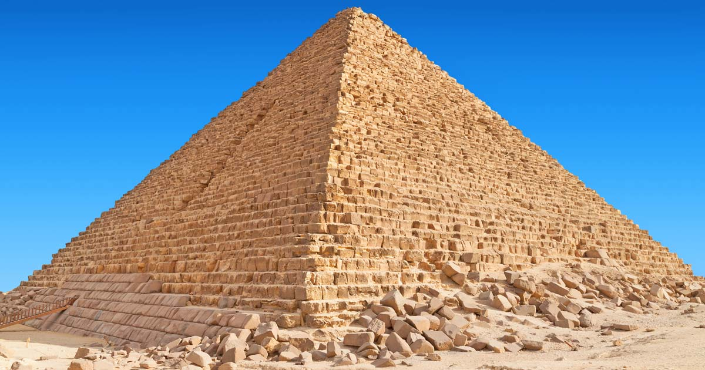
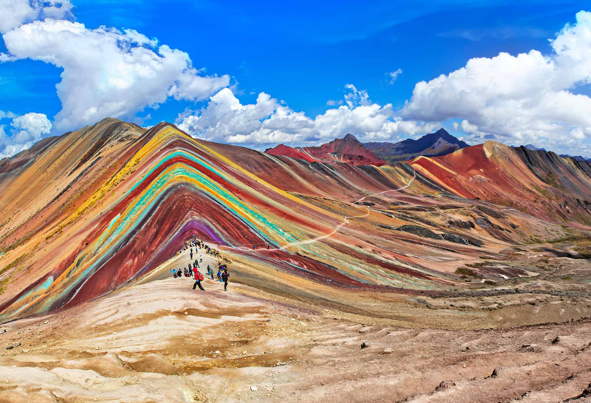
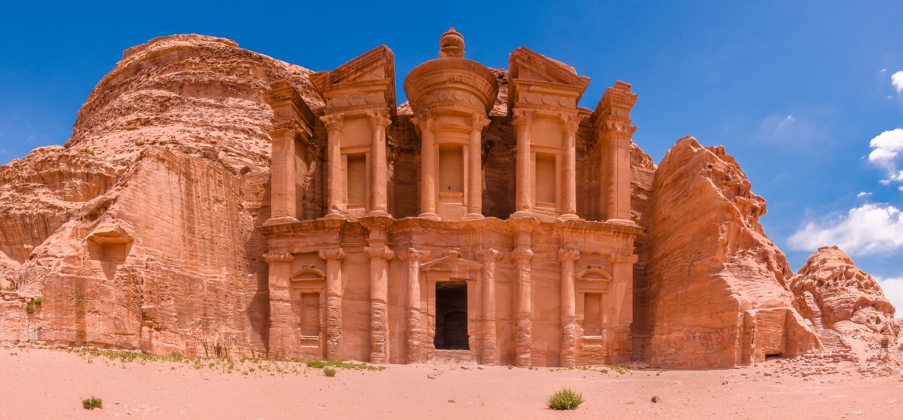

World Monuments

The Taj Mahal is an ivory-white marble mausoleum on the right bank of the river Yamuna in Agra, Uttar Pradesh, India. It was commissioned in 1631 by the fifth Mughal emperor, Shah Jahan to house the tomb of his favourite wife, Mumtaz Mahal; it also houses the tomb of Shah Jahan himself.

The Golden Temple is a gurdwara located in the city of Amritsar, Punjab, India. It is the preeminent spiritual site of Sikhism. It is one of the holiest sites in Sikhism, alongside the Gurdwara Darbar Sahib Kartarpur in Kartarpur, and Gurdwara Janam Asthan in Nankana Sahib.

According to Egyptologists, the pyramid was built as a tomb for Pharaoh Khufu, the second king of the Fourth Dynasty who ruled for approximately 20 years. For almost 4,000 years, the pyramid was considered the tallest man-made structure in the world.

Machu Picchu is an Incan citadel set high in the Andes Mountains in Peru, above the Urubamba River valley. Built in the 15th century and later abandoned, it’s renowned for its sophisticated dry-stone walls that fuse huge blocks without the use of mortar, intriguing buildings that play on astronomical alignments and panoramic views. Its exact former use remains a mystery.

The Great Wall of China is a series of fortifications that were built across the historical northern borders of ancient Chinese states and Imperial China as protection against various nomadic groups from the Eurasian Steppe.

Inhabited since prehistoric times, this Nabataean caravan-city, situated between the Red Sea and the Dead Sea, was an important crossroads between Arabia, Egypt and Syria-Phoenicia. Petra is half-built, half-carved into the rock, and is surrounded by mountains riddled with passages and gorges.

Chichén Itzá, ruined ancient Maya city occupying an area of 4 square miles (10 square km) in south-central Yucatán state, Mexico. It is thought to have been a religious, military, political, and commercial centre that at its peak would have been home to 35,000 people.